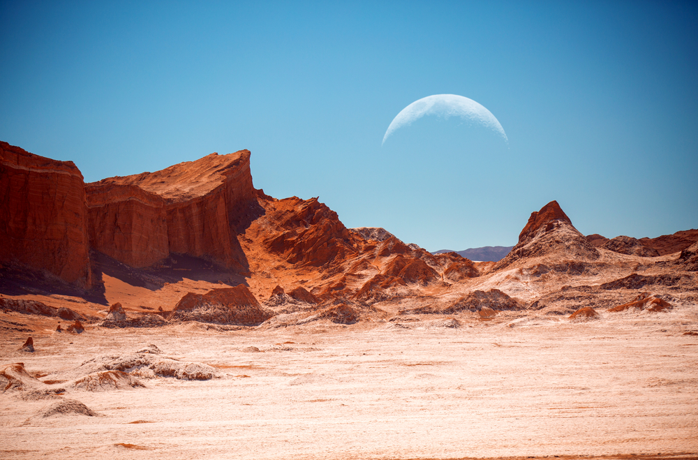
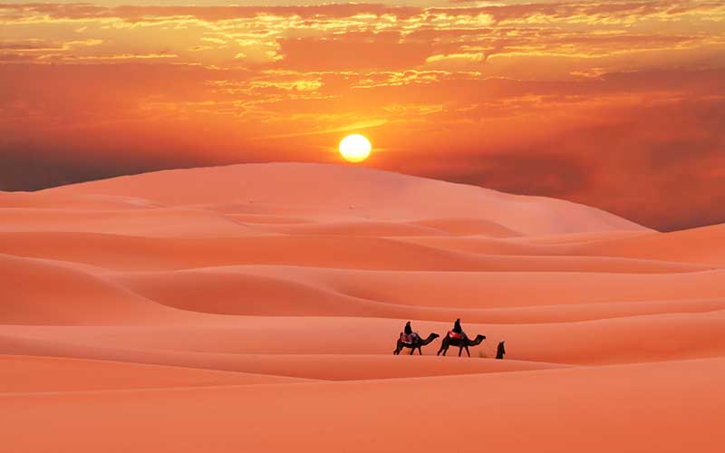

Desierto

Características
El desierto es una gran zona terrestre árida y con temperaturas extremas donde las lluvias son muy escasas. Se trata del bioma más seco de todos, por lo que su paisaje se muestra casi desnudo, con escasez de vegetación. Sin embargo, pese a la creencia popular de que es un lugar desolado, inhóspito y sin vida, alberga organismos especialmente adaptados a sus características.
El desierto se puede definir como cualquier entorno casi completamente libre de plantas, lo que incluye las zonas extremadamente frías como para permitir el crecimiento de vegetación. Así pues, zonas polares pueden ser consideradas desiertos helados. Lo que siempre caracteriza a un desierto no es el número de plantas o la temperatura que posee, sino las precipitaciones: si la región recibe un promedio de 24-25 centímetros (10 pulgadas) al año, es un desierto.
Ubicación Geográfica
Los desiertos cubren cerca de una quinta parte de la superficie de la Tierra y están presentes en todos los continentes excepto Europa. Los desiertos cálidos se hallan especialmente en latitudes tropicales y templadas, y solo una pequeña parte de la zona del ecuador los alberga.
El norte de África, Asia Menor y el centro y oeste de Australia son regiones donde este bioma domina, pero también hay desiertos importantes a través de Arizona, Estados Unidos; el norte de México, Sudamérica y parte de Asia Central. El gran desierto del Sahara es el más grande del mundo y se localiza en el norte del continente africano.
Clima y Condiciones Desérticas
Existen diferentes tipos de desierto donde las precipitaciones varían de una región a otra, pero comúnmente son extremadamente calurosos durante el día, al llegar a los 40 o 50 °C. El Sahara ha presentado temperaturas de hasta 57 °C. En contraste, por las noches la temperatura baja considerablemente hasta 0 o -10°C. El desierto de Atacama, ubicado en Chile, es el desierto más árido del planeta, pues increíblemente llueve una vez cada 15 años.
Se distinguen 4 tipos básicos de desierto, en función de su clima y otras características:
-
Caliente y seco.
Se reconoce por sus temperaturas cálidas durante todo el año. En verano, el ambiente se torna aun más caliente. Las temperaturas medias son de 20 a 25 ºC, pero pueden ser más altas. Por otro lado, la temperatura mínima ha llegado a -18 ºC. Puesto que el aire contiene escasa humedad para bloquear los rayos del sol, la radiación es doblemente intensa que en las regiones húmedas. Las precipitaciones son muy escasas y cuando las hay, tienden a presentarse en brevísimos tiempos entre largos períodos sin lluvias. Incluso pueden pasar varios años sin que se registre una gota de agua.
Ejemplos: desierto del Sahara y desierto australiano.
-
Semiárido.
Es moderadamente seco en verano, con temperaturas de 21 a 27 ºC; no suelen ser mayores de 38 ºC. En las noches disminuye a unos 10 ºC. Las precipitaciones son escasas pero ligeramente mayores que las de los desiertos cálidos y secos, pues registran un promedio de 2-4 centímetros anuales.
Ejemplos: desierto de artemisas de Utah y de Montana.
-
Costero.
Es caliente a moderadamente frío, con precipitaciones medias de 8 a 13 centímetros en muchas zonas. En verano, las temperaturas son de 13 a 24 ºC, y en invierno descienden hasta 5 ºC o menos.
Ejemplo: desierto de Atacama.
-
Frío.
A diferencia de los demás casos, el desierto frío se ubica en la Antártida, Groenlandia y otras regiones del hemisferio norte. Los inviernos se caracterizan por temperaturas entre los -2 y 4 ºC, y los veranos, curiosamente, registran 21-26 ºC.
Ejemplos: desierto de la Antártida.
Flora
Posee fauna y flora adaptada a las extremas condiciones climatológicas. Por ejemplo, como forma de protección ante los animales que buscan agua, algunas plantas tienen espinos y cortezas duras, y otras como los cactus, palmeras y bromelias almacenan gran cantidad de agua para sobrevivir por largos períodos de tiempo. Estas últimas habitan desiertos muy secos como el de Atacama y su única fuente de agua es de la neblina que aparece en determinadas horas de la madrugada. Otra adaptación es el desarrollo de largas raíces que capturan el líquido desde la capa freática de la tierra.
Por supuesto, ciertos desiertos no poseen más que dunas de arena a lo largo de muchos kilómetros, pero en otros emergen entre el suelo matorrales xerófilos y especies como el árbol de Joshua. Los oasis están formados por grandes cantidades de agua y vegetación.
Algunas plantas del desierto tienen un período de vida fugaz, pues únicamente viven durante la cortísima época de lluvias y permanecen en estado latente el resto del año. Los desiertos de Namib y Karoo contienen la flora más rica de todos, pero el desierto de Chihuahua no se queda atrás.
Fauna
Las formas de vida animal están adaptadas a la ausencia de humedad, y las estructuras corporales de varios de ellos son rígidas y ásperas para poder soportar la aridez y la pérdida de agua y así ser más difíciles de atacar por sus depredadores. Como ejemplos de fauna están serpientes, camaleones, escorpiones, tarántulas, buitres, tortugas del desierto, jerbos, iguanas del desierto, coyotes, ratas canguro y camellos. La mayoría de las aves que se observan en los desiertos son nómadas.
Arena Desértica
La arena varía en coloración de acuerdo con las condiciones del lugar, pero generalmente es de tono marrón, grisáceo o amarillento. Comúnmente es calcárea y con cantidades muy altas de sales como yeso y cloruro de sodio; esto hace que sea sumamente absorbente y drene rápidamente la poca agua de lluvia que cae en este tipo de bioma.
Son muy frecuentes las tormentas de arena, de las cuales algunas de ellas pueden ser vistas desde el espacio como las ocurridas en el desierto del Sahara. Imposibilitan la visibilidad y son muy peligrosas, pues respirar se vuelve sumamente complicado. Los vientos pueden trasladar la arena a cientos de kilómetros de distancia.
Paisaje del Desierto
Se asocian a las grandes dunas de arena y a suelos cálidos y rocosos, pero existe una variedad considerable de paisajes desérticos. Algunos son llanuras con montañas y colinas rocosas, como los que se hallan en Australia, y otros son una combinación de suelos planos con dunas arenosas, como el desierto de Gobi.
Ofrecen un paisaje hermoso; sin embargo, las condiciones extremas los vuelven un tanto peligrosos para los humanos porque entrañan peligros de insolación, agotamiento y ataque de animales ponzoñosos que ahí habitan.

ATRAS